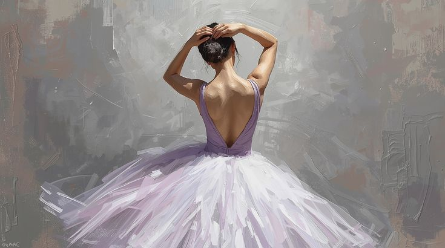

Bem-vindo ao universo da dança!
Por: Onde a Alma Dança
Um espaço onde a dança ganha vida, os movimentos contam histórias e a arte se transforma em expressão.
Porque existem sentimentos que só a dança consegue expressar.
Por: Onde a Alma Dança
Um espaço onde a dança ganha vida, os movimentos contam histórias e a arte se transforma em expressão.
Por: Onde a Alma Dança
O ballet surgiu nas cortes italianas durante o Renascimento e se desenvolveu na França, onde ganhou características que conhecemos até hoje. Ao longo dos séculos, tornou-se uma das formas mais conhecidas de dança clássica, unindo técnica, música, disciplina e expressão artística.
Por: Onde a Alma Dança
Além do ballet clássico, existem diversos estilos que exploram diferentes formas de expressão. A dança contemporânea mistura movimentos e emoções; o jazz combina ritmo e energia; e a dança lírica une a técnica à sensibilidade da música. Cada estilo possui sua própria identidade e maneira de contar histórias.
Por: Onde a Alma Dança
Mais do que movimentos, a dança é sentimento, dedicação e liberdade. É transformar emoções em arte e encontrar, em cada passo, uma forma única de expressar a própria essência.

Um espaço de inspiração
Dançar é descobrir novas formas de sentir, expressar emoções e transformar movimentos em histórias. Cada apresentação representa dedicação, esforço e amor pela arte.